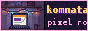
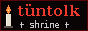
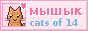
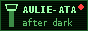
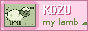
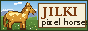
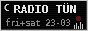
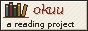

salam, welcome to the new nests ✶
Uyalar is a free hosting for home pages from 2005 (yes, 2005, Nurzhan, the banner on top is from that time). Most of the old nests are asleep. But since the end of 2023 there are new nests here: people our age making real websites by hand, with pixels and comics and shrines and too many gifs. This page is the map of them.
Привет! Это хаб новых гнёзд на uyalar.net: как получить гнездо, кольцо «Түндүк», стена кнопок 88x31 и архив нашей доски. Пишите руками, это весело.
Salam! Bul jañı uyalardın barakçası. Uyañdı öz koluñ menen kur.
the nests

uyalar.net/komnataNurai's pixel room in a khrushchevka. click everything. the carpet has lore
since 02.2024uyalar.net/m22
MARSHRUTKA 22, a webcomic about Ermek-baike and his Talas route. new strip on Sundays (mostly)
since 05.2024uyalar.net/ostanovka
polaroids of Soviet bus stops and mosaics, from Talas to Jon-Aryk. stand there and wait with her
since 09.2024

uyalar.net/tuntolka tüntolk shrine. every record, every rumour, the Polivoks
since 01.2024uyalar.net/vostern
THE EASTERN: a shrine to Talasfilm's Easterns and to Kara-Bek, the best villain in Irad
since 03.2025

uyalar.net/mysykthe cats of courtyard No. 14, Nurzhan: a census, with ratings and crimes
since 06.2025uyalar.net/tamga
Ç Ş Ñ Ä Ö Ü İ: a love page for Iradi letters, fonts and shop signs
since 11.2024

uyalar.net/aulieatanight trips to the dead airport. read trip 5 in daylight
since 04.2024

uyalar.net/kozuadopt a pixel lamb. it lives in your browser. it doesn't die (aruuke's rule)
since 02.2025uyalar.net/kseroks
the zine library of a Talas print shop's copier, after 19:00
since 10.2024

uyalar.net/jylkypixel horses from Kara-Oi, with the real coat words
since 09.2024

uyalar.net/tunRADIO TÜN: the night radio's schedule. text only. Fri+Sat 23-03
since 03.2024

uyalar.net/okuuaidai reads Iradi books and writes a little about each. the shelf is clickable
since 01.2024uyalar.net/stikerler
a shrine to the Tulpar sticker pack, redrawn. which sticker are you?
since 05.2025uyalar.net/kokordo
KÖK ORDO: a collage world of floating islands carried by tulpars
since 06.2024
more nests are waiting in the admin's queue (approvals come in batches, about once a month, nobody knows which day). how to get one →
updates
29.10.2026 board archive: added October. the "is Uyalar dying again" thread is closed, it is not.
14.06.2025 mysyk joined the ring! cats!!!
22.03.2025 vostern joined. please everyone watch Vengeance Rider. then watch it again.
30.11.2024 new: the button wall. make a button, send it to me.
18.05.2024 the Tündük ring is open. code on the ring page.
04.02.2024 tutorial in Iradi (thank you Aidai) and English.
12.12.2023 this hub exists. it is one page. hello.